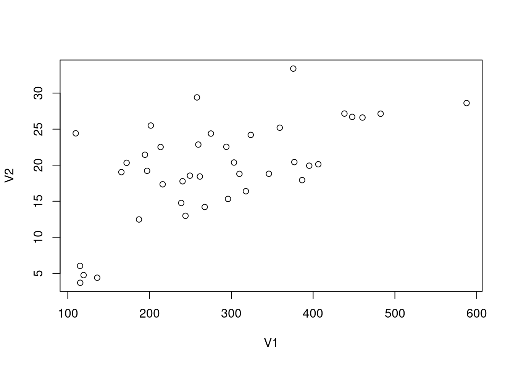
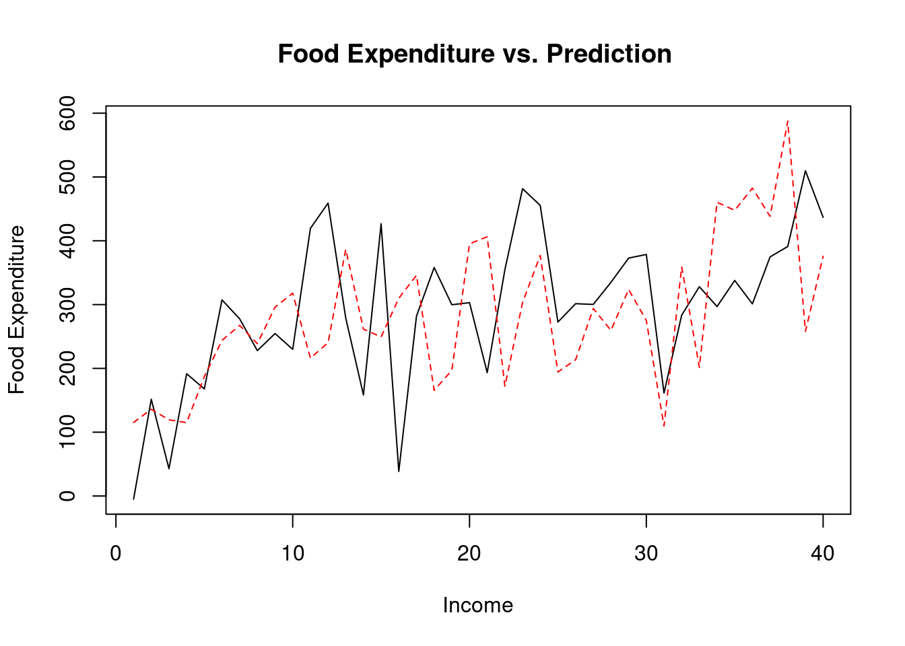
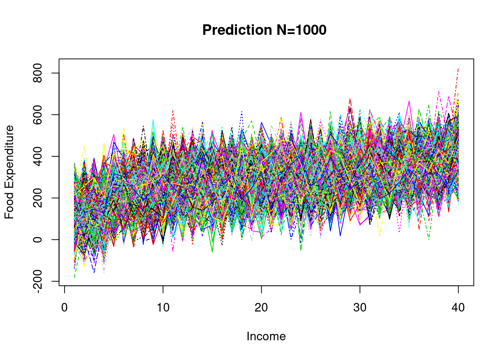

Chapter 4
2021-07-19
Chapter 1 The Simple Linear Regression Model
1.1 LOAD DATA
food = read.table(url("http://www.principlesofeconometrics.com/poe4/data/dat/food.dat"),header=F)head(food) ## V1 V2
## 1 115.22 3.69
## 2 135.98 4.39
## 3 119.34 4.75
## 4 114.96 6.03
## 5 187.05 12.47
## 6 243.92 12.981.2 DATA Summary
summary(food) # Summary statistics ## V1 V2
## Min. :109.7 Min. : 3.69
## 1st Qu.:200.4 1st Qu.:17.11
## Median :264.5 Median :20.03
## Mean :283.6 Mean :19.60
## 3rd Qu.:363.3 3rd Qu.:24.40
## Max. :587.7 Max. :33.401.3 Plot Data
plot(food) # Plot matrix 
1.4 Model
\[ Y_{i} = \alpha + \beta X_{i} + e_{i} \]
1.5 Variables
x = food[,2] # Income
y = food[,1] # Food Expenditure1.6 Estimation
reg <- lm(y ~ x)1.7 Results
summary(reg) ##
## Call:
## lm(formula = y ~ x)
##
## Residuals:
## Min 1Q Median 3Q Max
## -223.025 -50.816 -6.324 67.879 212.044
##
## Coefficients:
## Estimate Std. Error t value Pr(>|t|)
## (Intercept) 83.416 43.410 1.922 0.0622 .
## x 10.210 2.093 4.877 1.95e-05 ***
## ---
## Signif. codes: 0 '***' 0.001 '**' 0.01 '*' 0.05 '.' 0.1 ' ' 1
##
## Residual standard error: 89.52 on 38 degrees of freedom
## Multiple R-squared: 0.385, Adjusted R-squared: 0.3688
## F-statistic: 23.79 on 1 and 38 DF, p-value: 1.946e-051.8 b1, b2
b1 <- coef(reg)[[1]]
b2 <- coef(reg)[[2]]
b1## [1] 83.416b2## [1] 10.209641.9 Least sqaures prediction (one time)
N <- 40
sde <- 89.52
y1 <- b1+b2*x+rnorm(N, mean=0, sd=sde)
y2 <- data.frame()
y2 <- cbind(y1, y)1.10 Least sqaures prediction (one time)
matplot(y1, type='l', col=1:40,
xlab='Income', ylab='Food Expenditure',
main ='Prediction N=1 ')1.11 Least sqaures prediction (one time)
matplot(y2, type='l', col=1:40,
xlab='Income', ylab='Food Expenditure',
main ='Food Expenditure vs. Prediction ')
1.12 Least sqaures prediction (1,000 times)
b1 <- coef(reg)[[1]]
b2 <- coef(reg)[[2]]
yy <- data.frame()
trial <- 1
trials <- 1000
while(trial <= trials) {
y3 <- b1+b2*x+rnorm(N, mean=0, sd=sde)
yy <- rbind(yy, t(y3))
trial <- trial + 1
}1.13 Least sqaures prediction (1,000 times)
matplot(t(yy), type='l', col=1:40,
xlab='Income', ylab='Food Expenditure',
main ='Prediction N=1000 ')
1.14 Save DATA
sink(‘ch4.out’)
# Least sqaures prediction (one time)
y1## [1] 144.07903 137.20409 69.49973 217.90362 280.35268 283.60696 185.70223
## [8] 236.51034 226.81393 337.09313 230.64365 281.08114 321.53907 278.74084
## [15] 331.20109 293.86157 369.70590 318.51739 292.09949 325.10134 152.83280
## [22] 253.18389 328.83167 230.27488 131.36341 145.55679 528.89311 272.33759
## [29] 221.86853 379.79063 532.45302 311.97204 359.20641 280.22802 265.78716
## [36] 262.72716 417.08832 332.59979 381.39916 484.22840sink()
1.15 References
- Principles of Econometrics with R https://bookdown.org/ccolonescu/RPoE4/
- Principles of Econometrics
http://www.principlesofeconometrics.com/poe4/poe4.htm - Beowulfkorea
https://sites.google.com/site/beowulfkorea/yoon/r